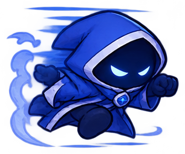

Процедурная анимация
Оживляем маскота без покадровой анимации: пивоты, фазы, инерция и вес.
Загружаем куклу…
Двигайте курсором по сцене · клик — прыжок

Оживляем маскота без покадровой анимации: пивоты, фазы, инерция и вес.
Загружаем куклу…
Двигайте курсором по сцене · клик — прыжок